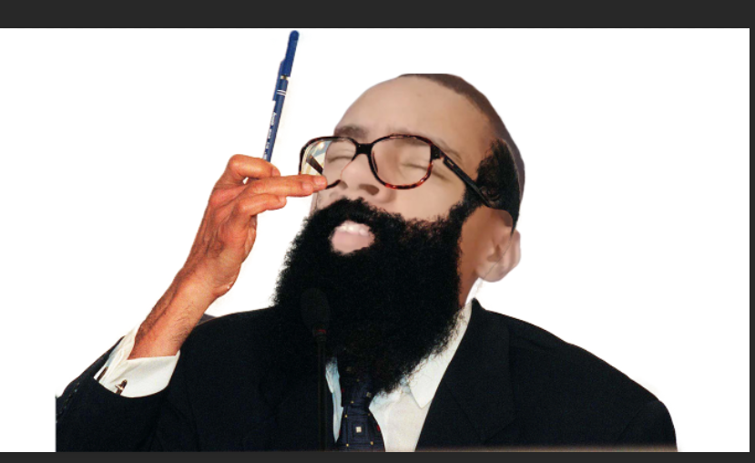

VARIANTES
Veremos algumas das variantes da espécie Baiano, mais especificamente da familia F.E.L.I.P.E
nossa primeira variante é E.N.E.I.A.S

ela é conhecida por ser esperta, ardilosa e por algum motivo, é facilmente atraido por garotas usando fantasias de palhaço
o proximo é o J.O.K.E.R